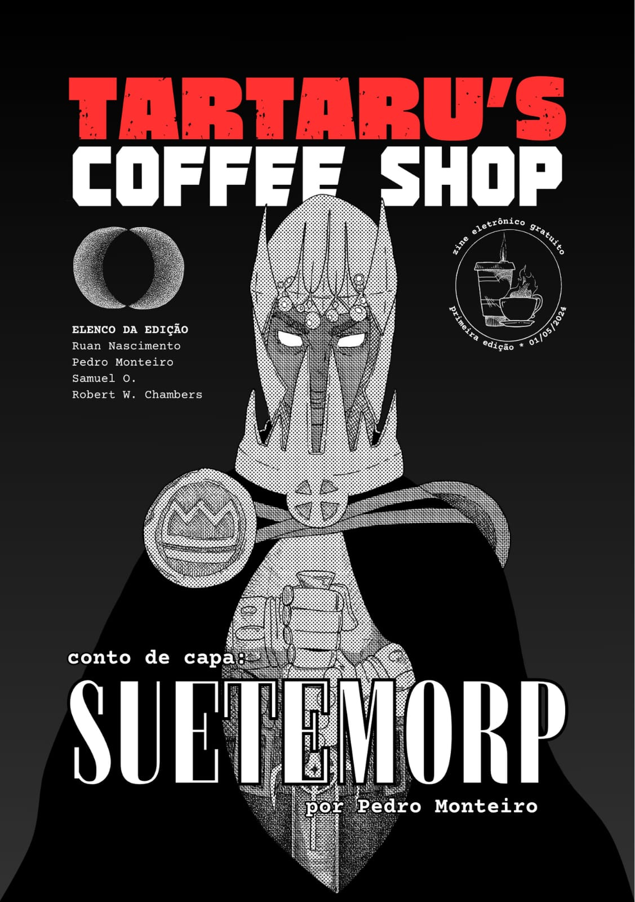

Cidade Eclipse
uma cooperativa de artistas emergentes
TARTARU'S COFFE SHOPEE

N°2 31/05/2024 [totalmente 0822]
Em uma cidade escondida de tudo há uma cafeteria exótica na beira de uma fenda, uma fenda tão profunda que pode até mostrar o rio Tártaro do Hades. Esta cafeteria é a Tartaru's Coffee Shop, localizada na Cidade Eclipse. Entre, dê uma espiada nas nossas profundezas - mas não proteja os olhos, hein!